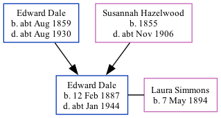

Edward William Alfred Dale 1887 - c1944
[ Home ] | [ Calendar ] | [ Surnames Index ] | [ Family History ]The son of Edward Dale and Susannah Hazelwood, Edward Dale, the second cousin twice-removed on the father's side of Nigel Horne, was born in Chartham, Kent, England on Feb 12, 18871,2 and baptized there at St Mary's Church on Mar 20, 1887. He married Laura Simmons there at St Mary's Church, on Dec 26, 19155. Like his father, he was an agricultural laborer.
Throughout his life, Edward lived in several places: at Prospect Row, Harbledown, Kent, England on Apr 5, 18916; at Shalmsford Street in Chartham on Apr 2, 19117; and on 27 London Road, Swale, Kent on Sep 29, 19391. During 1903, he was serving in the army (regiment: Buffs (East Kent Regiment); Service number: 7156).
He died c. Jan 1944 in Sittingbourne, Kent3,4 and was buried at St Mary's Church, Teynham, Kent on Jan 14, 19444.
Parents
- Edward William was born c. Aug 1859
- Susannah was born in 1855
Citations
- 1939 Register - Findmypast (was the head of the household)
- England & Wales births 1837-2006 - Findmypast
- England & Wales deaths 1837-2007 - Findmypast
- Kent, Canterbury Archdeaconry Burials - Findmypast
- England & Wales Marriages 1837-2005 - Findmypast
- 1891 England, Wales & Scotland Census - Findmypast (was age 4 and the son of the head of the household)
- 1911 Census for England & Wales - Findmypast (was age 24 and the son of the head of the household)
Media
England & Wales marriages 1837-2008 - BMD/M/1915/4/AZ/000353/088
England Marriages 1538-1973 - R_848405724
Kent, Canterbury Archdeaconry marriages 1538-1928 - GBPRS/CANT/M/97057715/1
Kent, Canterbury Archdeaconry burials 1538-1988 - GBPRS/CANT/D/95365597
England & Wales deaths 1837-2007 - BMD/D/1944/1/AZ/000254/088
England & Wales births 1837-2006 - BMD/B/1887/1/AZ/000138/183
British Army Service Records 1760-1915 Image - GBM-WO97-4633-009-001
1891 England, Wales & Scotland Census - GBC/1891/0005722666
1939 Register Transcription - TNA-R39-1854-1854E-019-30
England Births & Baptisms 1538-1975 - R_885426024
Kent Baptisms - GBPRS/CANT/B/96194607
Kent marriages and banns - GBPRS/CANT/M/94078929/1
Family Tree
Generated by Ged2Site. Last updated on Jul 20, 2025